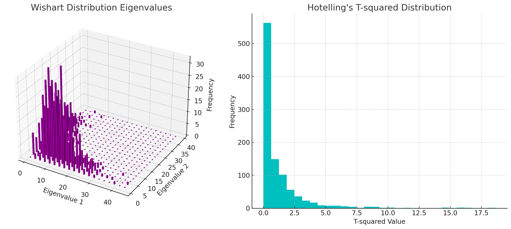

Week 2 Lecture 2#
4. Multivariate Distributions#
4.1 Distribution and Density Functions#
Cumulative Distribution Function (CDF):
The CDF is used to determine the probability that a random variable will take a value less than or equal to a certain value.
The marginal CDF is the CDF of one variable within a multivariate distribution, not considering the others.
Probability Density Function (PDF):
The PDF is the derivative of the CDF and represents the probability of the random variable falling within a particular range of values.
The marginal density is the PDF of one variable within a multivariate distribution, integrated out over the range of the other variables.
Conditional Expectation:
The expected value of \( X_2 \) given that \( X_1 \) is equal to \( x_1 \) can be expressed as:
Conditional Variance:
The variance of \( X_2 \) given \( X_1 \) is equal to \( x_1 \) is calculated by:
Covariance Matrix (\( \Sigma \)):
The covariance matrix represents the covariance between each pair of elements in the random vector \( X \) and is given by:
Covariance Matrix Between Two Vectors (\( \Sigma_{X,Y} \)):
For two random vectors \( X \) and \( Y \) with means \( \mu \) and \( \nu \) respectively, their covariance matrix is:
Tips for Covariance and Variance#
The covariance of the sum of two random variables \( X \) and \( Y \) with a third variable \( Z \) is the sum of their individual covariances with \( Z \):
The variance of the sum of two random variables is the sum of their individual variances plus the sum of their covariances:
The covariance of two linear transformations \( AX \) and \( BY \) is given by:
4.2 Multivariate Normal Distributions#
For a random vector \( X \) following a multivariate normal distribution with mean \( \mu \) and covariance matrix \( \Sigma \), the density function is given by:
Linear transformations of \( X \) result in new random vectors that are also normally distributed, with means and covariances determined by the transformation matrices.
The independence of components of \( X \) can be deduced from the off-diagonal entries of the covariance matrix \( \Sigma \).
The Mahalanobis distance is a measure of the distance from a point to the mean of a distribution, scaled by the covariance structure of the distribution, and is used to determine ellipsoids of equal density in the distribution’s graph.
Combining all these concepts, we understand how multivariate distributions behave under various operations, how to measure distances
4.3 The Wishart Distribution#
The Wishart Distribution is a family of probability distributions defined over symmetric, positive-definite random matrices (i.e. matrix-valued random variables).
Definition: The Wishart distribution is a probability distribution that generalizes the chi-square distribution to multiple dimensions. It is the distribution of the sample covariance matrix of a multivariate normal distribution.
Usage: It is used in multivariate statistical analysis, particularly in the estimation of covariance matrices. It also appears in the study of Bayesian statistics as the conjugate prior of the inverse covariance matrix of a multivariate normal distribution.
Here’s an intuitive way to think about the Wishart distribution: If you take multiple samples from a multivariate normal distribution and calculate the sample covariance matrix for each set of samples, the distribution of these matrices follows a Wishart distribution. The number of samples you take (minus one) is analogous to the degrees of freedom in the chi-square distribution.
4.4 The Hotelling’s T-squared Distribution#
Definition: Hotelling’s T-squared distribution is a multivariate generalization of Student’s t-distribution. It is used when dealing with multiple correlated statistical tests simultaneously.
Usage: This distribution is commonly used in hypothesis testing, especially in multivariate analysis of variance (MANOVA) and in constructing confidence intervals and regions for multivariate means.
The Hotelling’s T-squared distribution allows for simultaneous testing of the mean vector in a multivariate normal distribution. When you are interested in comparing the mean vector of a multivariate normal sample to a known vector (or comparing the difference between the mean vectors of two multivariate normal samples), the Hotelling’s T-squared statistic gives a way to do this while accounting for the correlations between the variables.
For visualization, I can provide a simulated image of the density function for both distributions. The Wishart distribution will be represented by the shape of the sample covariance matrix, and the Hotelling’s distribution can be visualized as the distribution of a test statistic. Let’s create these visualizations.
Here are the visualizations for the Wishart and Hotelling’s T-squared distributions:
{kind=link}
Wishart Distribution Eigenvalues:
The first plot shows the eigenvalues of the sample covariance matrices that follow a Wishart distribution. Each bar represents the frequency of the eigenvalue combinations from the simulated Wishart-distributed matrices. The height of each bar indicates how often a particular combination of eigenvalues occurred in the simulation.
Hotelling’s T-squared Distribution:
The second plot is a histogram of the T-squared values that follow Hotelling’s T-squared distribution. It shows how often each range of T-squared values occurred. The shape of the distribution is similar to the Student’s t-distribution but in a multivariate context.
These distributions are foundational in multivariate statistical methods, particularly in hypothesis testing involving multiple dimensions. The Wishart distribution helps in understanding the variability of covariance matrices, while Hotelling’s T-squared distribution is used to compare mean vectors against a hypothesized value or between groups.
Proof#
To prove that \( \tau^2 = nx^T M^{-1} x \) has a Hotelling’s T² distribution under the conditions that \( x \sim N_p(0, I_p) \) and \( M \sim W_p(I_p, n) \) are independent, we can use the properties of the multivariate normal distribution, the Wishart distribution, and the definition of the Hotelling’s T² distribution.
Definitions and Properties#
Multivariate Normal Distribution: \( x \sim N_p(0, I_p) \) means \( x \) is a p-dimensional normal random vector with mean 0 and identity covariance matrix \( I_p \).
Wishart Distribution: \( M \sim W_p(I_p, n) \) means \( M \) is a p-dimensional Wishart random matrix with scale matrix \( I_p \) and \( n \) degrees of freedom.
Hotelling’s T² Distribution: A random variable is said to have a Hotelling’s T² distribution if it can be expressed in the form \( \tau^2 = n x^T M^{-1} x \) where \( x \) and \( M \) are as defined above.
Proof#
Given Conditions:
\( x \) is distributed as \( N_p(0, I_p) \).
\( M \) is distributed as \( W_p(I_p, n) \).
\( x \) and \( M \) are independent.
Wishart Distribution as a Sum of Outer Products:
By the definition of the Wishart distribution, \( M \) can be expressed as \( M = \sum_{i=1}^n Z_i Z_i^T \), where \( Z_i \) are independent and identically distributed as \( N_p(0, I_p) \).
Quadratic Form of a Multivariate Normal Distribution:
The quadratic form \( x^T M^{-1} x \) in the context of multivariate normal distributions has a well-known distribution. Specifically, if \( x \sim N_p(0, I_p) \), then \( x^T A x \) (for any symmetric matrix \( A \)) follows a chi-square distribution with degrees of freedom equal to the rank of \( A \), provided \( A \) and \( x \) are independent.
In our case, \( A = n M^{-1} \), and since \( x \) and \( M \) are independent, \( nx^T M^{-1} x \) follows a chi-square distribution with \( p \) degrees of freedom.
Hotelling’s T² Distribution:
The definition of Hotelling’s T² distribution is exactly the form \( \tau^2 = nx^T M^{-1} x \) where \( x \) and \( M \) are as defined.
Therefore, \( \tau^2 \) is distributed as Hotelling’s T²(p, n).
Conclusion#
The proof relies on understanding the properties of multivariate normal and Wishart distributions and the known results about the quadratic form of a multivariate normal distribution. By recognizing that \( nx^T M^{-1} x \) forms a quadratic form and considering the independence of \( x \) and \( M \), we conclude that \( \tau^2 \) is distributed as Hotelling’s T²(p, n).